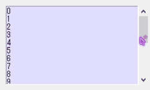

スクロールバーの作成にはまず Scrollber() を用いて定義を行う。
#横軸のスクロールバー
scroll_X = t.Scrollbar( orient = 'horizontal' )
#縦軸のスクロールバー
scroll_Y = t.Scrollbar( orient = 'vertical' )
続いてエントリーやテキストにスクロールバーを紐づける。
#エントリーの横軸にスクロールバーを紐づける
ent = t.Entry( xscrollcommand = scroll_X.set )
#または
ent = t.Entry()
ent[ 'xscrollcommand' ] = scroll_X.set
#テキストの縦軸にスクロールバーを紐づける
tex = t.Text( yscrollcommand = scroll_Y.set )
#または
tex = t.Text()
tex[ 'yscrollcommand' ] = scroll_Y.set
次にスクロールバーをエントリーやテキストの横軸または縦軸に紐づける。
#スクロールバーをエントリーの横軸に紐づける
scroll_X[ 'command' ] = ent.xview
#スクロールバーをテキストの縦軸に紐づける
scroll_Y[ 'command' ] = tex.yview
縦軸のスクロースバーを設置したテキストに、２０行の数列を打ち込むプログラムを記載する。右端のスクロースバーをいじることにより下まで読むことができる。
実行例
import tkinter as t
app = t.Tk()
app.title( 'テスト' )
app.geometry( '250x150' )
scroll_Y = t.Scrollbar( orient = 'vertical' )
tex = t.Text( background = '#DFDFFF', yscrollcommand = scroll_Y.set)
tex.place( x = 10, y = 10, width = 220, height = 130 )
scroll_Y[ 'command' ] = tex.yview
scroll_Y.place( x = 230, y = 10, height = 130 )
#０～１９までの数字を１行ごとに挿入している
s = [ tex.insert( t.END, str(x) + '\n' ) for x in range(20) ]
app.mainloop()
実行結果（gif画像）
